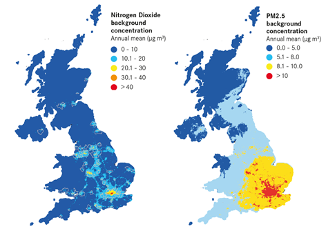
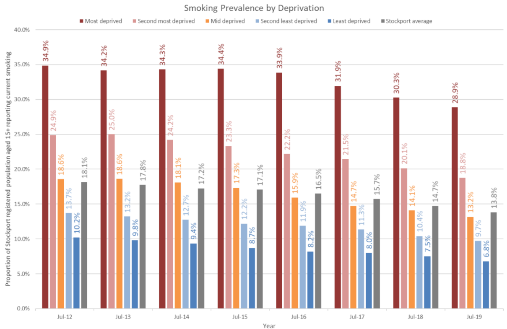

Urban general air polution - PM2.5
1. PM2.5, also known as fine particulate matter, refers to particles that have a diameter less than 2.5 micrometres.
It is mostly made by soot and dust by burning fuels, such as in urban area, there will be many vehicles burning gasoline and generate high amount of PM2.5.

PM2.5 is proven to be a health risk, the researchers found the relationship between these general air pollution with diseases.
The Royal College of Physicians has estimated that air pollution is responsible for more than 20,000 hospital admissions a year due to respiratory or cardiovascular diseases.
There is no comprehensive local data on the various health impacts of air pollution.
However, research conducted by King’s College London and UK 100 has estimated the following effects on nine UK cities:
urban general air polution - PM2.5
- Living near a busy road in London may contribute to 230 hospital admissions for strokes every
- Living near a busy road may stunt lung growth in children by 5 per cent in London and 14.1 per cent in Oxford.
- In Birmingham, the risk of outside-hospital cardiac arrest is 2.3 per cent higher on high pollution days.
- Higher air pollution days are responsible for 43 more people going to hospital for respiratory disease in Southampton, 68 in Bristol, 98 in Liverpool.
Public Health England estimates that there could be around 2.5 million new cases of coronary heart disease, stroke, lung cancer and other health conditions by 2035 if pollution levels remain the same.
Passive smoking / Secondhand smoke

most of the public area might prohibited smoking.
Stockport have lower smoking rate than before, but we didnt actually pervented it.
Or if your family member didn’t quit smoking, it would be a risk.
Second-hand smoke comes from the tip of a lit cigarette and the smoke that the smoker breathes out, the polluted air will be diffused to all around the room.
inhaling Second-hand smoke will significantly affect to your health, and it is even worse to babies, kids, and pregnant people.
- 70% percent of lung cancer are caused by smoking.
- it also brings cancer to Mouth, kidney, liver, stomach, or pancreas.
- It increases the risk of stroke, heart attack and coronary heart disease.
- A child can develop chest infections include meningitis, cough.
- It can make asthma patients’ symptoms go worse.
- Smoking will put unborn baby at risk, same as the pregnant woman.
formaldehyde and other chemicals
formaldehyde (also known as Formalin, methanal etc) is a strong-smelling colourless gas that is used in household products.
The chemical can be released by paints and other materials, by emitting the gas into the air. Once the paint is painted on the wall, the polluting will continue for years.
In these years, many manufacture factories are trying to decrease the amount of chemicals that released to the air, but it is not 100% useful of course. It is generated indoor, and the risk might be unavoidable, even you take it seriously trying to eliminate it.
Scientists proved that formaldehyde, as a type of carcinogen, can causes cancer to your throat, your skin or lung.
When formaldehyde is present in the air at levels higher than 0.1 parts per million (ppm), some people may have health effects, such as:
- Watery eyes
- burning sensation of eyes, nose and throat
- coughing
- nausea
- skin irritation